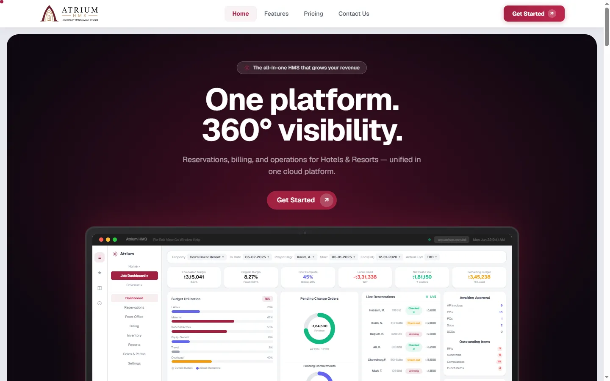
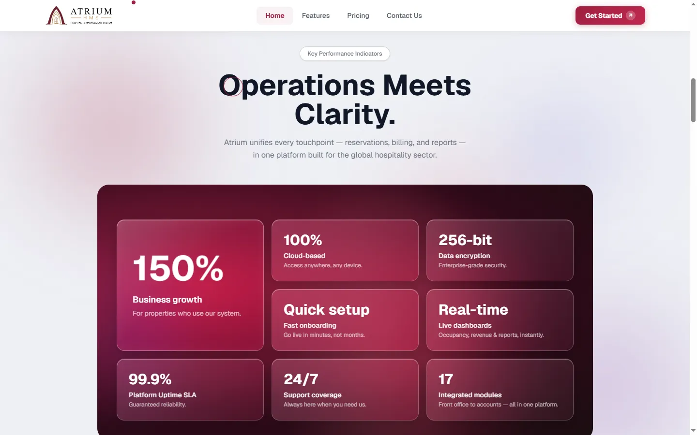
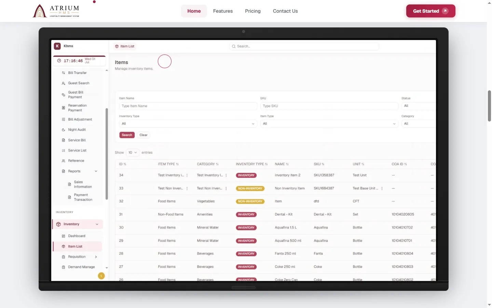
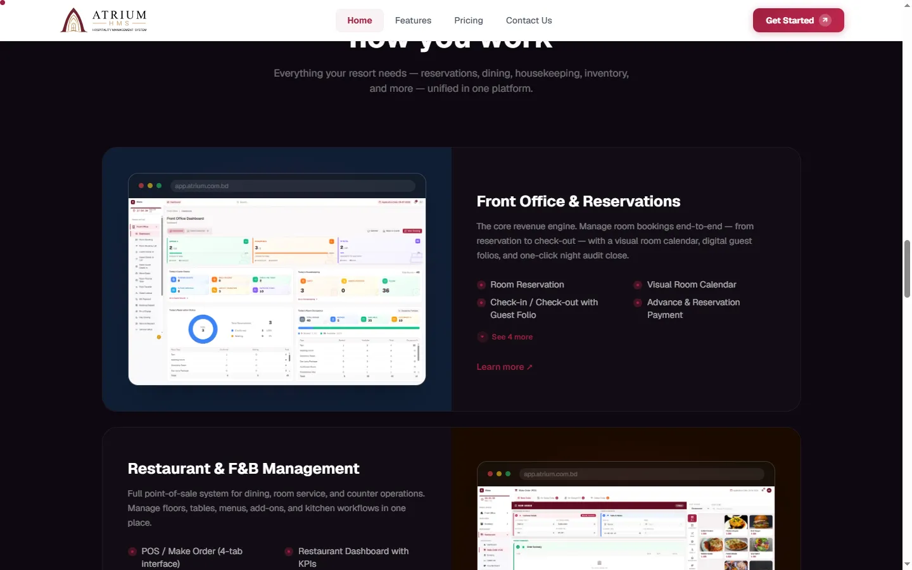
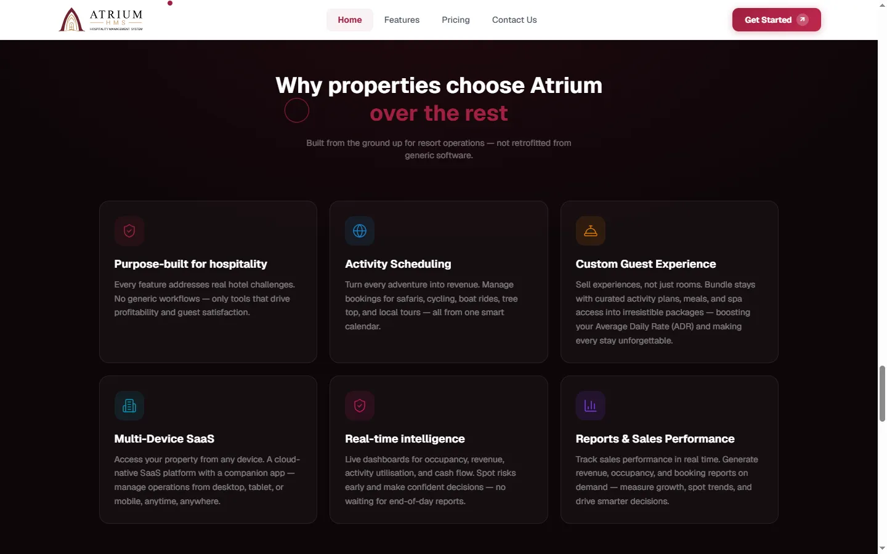
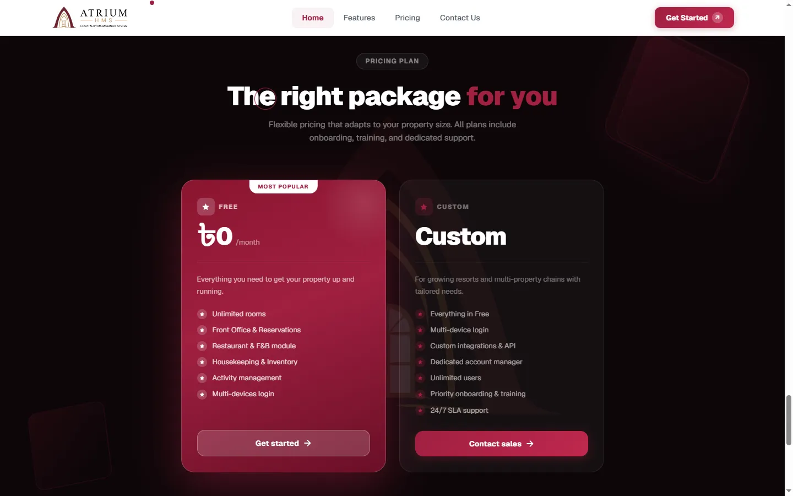
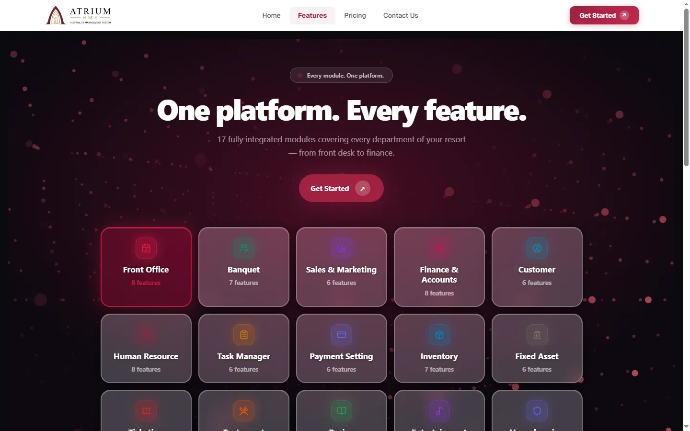

Hospitality SaaS · Marketing site · Apex DMIT
The Atrium website
Designed it, then built it — two weeks from start to published, using an AI-driven development lifecycle. The client reported a 30% increase in sales and twenty new companies engaged.
- Role
- Design and development
- Team
- Three
- Duration
- Two weeks to publish
- Process
- AI-DLC
- Live at
- atriumhms.com
01The job
Atrium HMS is sold to hotels and resorts, and it sells itself — a property signs up online and is provisioned as its own tenant, with no sales call in the middle. That makes the website the whole front of the funnel rather than a brochure beside it.
So the site had one job: take a property owner from never having heard of the product to starting a signup, and do it for a platform with twelve modules behind it.
02Designing and building it
I did both ends of this one. Design through to the deployed site, in two weeks, following an AI-driven development lifecycle — AI in the loop across the build rather than a handoff from design to a separate developer.
The compression is the point. Two weeks from nothing to published, for a marketing site carrying a twelve-module product, is not a timeline a design-then-handoff process reaches. Removing the handoff removed the part where intent gets lost.
03What the site does
- The dashboard leads. The hero is a product screenshot dense with real numbers — margin, cash flow, budget utilisation, live reservations — not a photograph of a hotel. The buyer is an operator, and operators want to see the tool.
- Features expand rather than list. Each area shows four items and a see four more. Everything is reachable; nothing is dumped at once.
- Proof sits above the fold of the pitch — uptime, encryption, setup speed, support hours, module count.
- One action throughout. Every route ends at Get started, because signup is the product's front door.
04What happened
The client reported a 30% increase in sales after launch, and twenty new companies engaging with the product.
Both figures are the client's, measured on their side rather than mine — the site is one of several things that changed in that period, and it is the honest way to state it.
The site, section by section
Seven screens covering the whole argument — from the first thing a property owner sees to the price they decide on.
Screens







05Credit
Design and development at Apex DMIT, in a team of three. The platform the site sells is a separate case study.
Atrium HMS
Three modules to twelve in eight weeks, across two connected systems.
Say hello
Happy to walk through this project, or any of the others, on a call.